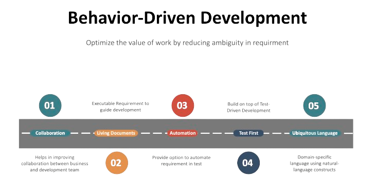

Behaviour-Driven Development (BDD) on tarkvaraarenduse metoodika, mis keskendub kogu meeskonna osalusele alates ärinõuete kirjeldamisest kuni rakenduse testimiseni.
Behaviour-Driven Development (BDD) keskendub eelkõige sellele, kuidas tarkvara käitub erinevates olukordades, mitte ainult sellele, kuidas see on rakendatud tehnilisest vaatenurgast. See hõlmab äri ja arendusmeeskondade koostööd, et luua selgeid ja arusaadavaid stsenaariume, mida seejärel rakendatakse ja testitakse.
BDD põhineb kahe peamise komponendi - lugu ja stseeni - kirjutamisel. Lugu kirjeldab soovitud käitumist äri seisukohast ning stseen kirjeldab seda, kuidas rakendus peaks vastama sellele käitumisele.
Üks BDD olulisemaid eeliseid on suurenenud selgus ja arusaamine tarkvara nõuetest kogu meeskonna poolt. See võimaldab kiiremat ja efektiivsemat arendusprotsessi ning aitab vältida segadusi ja vigu, mis võivad tekkida traditsiooniliste meetodite kasutamisel.
Lõpuks, Behaviour-Driven Development soodustab ka pidevat tagasisidet ja iteratiivset arendust, mis aitab meeskonnal kohanduda muutuvate ärinõuete ja keskkonnatingimustega.